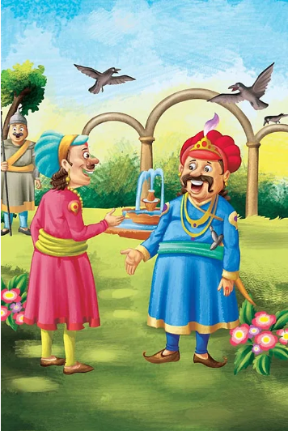

A lion was once sleeping in the jungle when a mouse started running up and down his body just for fun.This disturbed the lion’s sleep, and he woke up quite angry. He was about to eat the mouse when the mouse desperately requested the lion to set him free. “I promise you, I will be of great help to you someday if you save me.”The lion laughed at the mouse’s confidence and let him go.
One day, a few hunters came into the forest and took the lion with them. They tied him up against a tree. The lion was struggling to get out and started to whimper. Soon, the mouse walked past and noticed the lion in trouble. Quickly, he ran and gnawed on the ropes to set the lion free. Both of them sped off into the jungle.
Moral of the StoryA small act of kindness can go a long way.
One day, king Akbar asked a question in his court that left everyone in the courtroom puzzled. As they all tried to figure out the answer, Birbal walked in and asked what the matter was. They repeated the question to him.
The question was, “How many crows are there in the city?”
Birbal immediately smiled and went up to Akbar. He announced the answer; he said there were twenty-one thousand, five hundred and twenty-three crows in the city. When asked how he knew the answer, Birbal replied, “Ask your men to count the number of crows. If there are more, then the relatives of the crows must be visiting them from nearby cities. If there are fewer, then the crows from our city must be visiting their relatives who live outside the city.” Pleased with the answer, Akbar presented Birbal with a ruby and pearl chain.
Moral of the StoryHaving an explanation for your answer is just as important as having an answer.
In a village, lived a carefree boy with his father. The boy’s father told him that he was old enough to watch over the sheep while they graze in the fields. Every day, he had to take the sheep to the grassy fields and watch them as they graze. However, the boy was unhappy and didn’t want to take the sheep to the fields. He wanted to run and play, not watch the boring sheep graze in the field. So, he decided to have some fun. He cried, “Wolf! Wolf!” until the entire village came running with stones to chase away the wolf before it could eat any of the sheep. When the villagers saw that there was no wolf, they left muttering under their breath about how the boy had wasted their time. The next day, the boy cried once more, “Wolf! Wolf!” and, again, the villagers rushed there to chase the wolf away.
The boy laughed at the fright he had caused. This time, the villagers left angrily. The third day, as the boy went up the small hill, he suddenly saw a wolf attacking his sheep. He cried as hard as he could, “Wolf! Wolf! Wolf!”, but not a single villager came to help him. The villagers thought that he was trying to fool them again and did not come to rescue him or his sheep. The little boy lost many sheep that day, all because of his foolishness.
Moral of the StoryIt is difficult to trust people who lie, so it’s important to always be truthful.